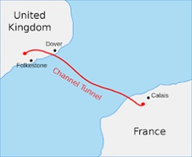
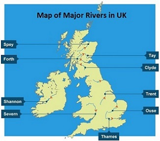

Lecture 1
General Overview of the British Isles
British Isles, which include over 5,000 islands, are situated off the north-west coast of Europe. The total area of the British Isles is 322,246 sq. km. Great Britain is the larger of the two big islands. Ireland is the smaller island to the west of Great Britain. The territory of Great Britain is divided into three countries: England, Scotland and Wales. The territory of Ireland is divided into the Irish Republic, or Eire (official name from 1937 to 1949), which is an independent and separate country and Northern Ireland. England, Scotland, Wales and Northern Ireland are the four parts of the United Kingdom of Great Britain and Northern Ireland.
The term ‘Britain’ is used when talking about the island of Great Britain, which does not include Northern Ireland. The term ‘England’ should never be used to describe Britain, because England is only one part of the island. It is correct to call people from England, Scotland, or Wales British, although people from England may also properly be called English, people from Scotland Scottish, people from Wales Welsh and people from Northern Ireland Irish.
The territory of the U.K. is 244,100 sq. km, which is half the size of France. From south to north, from Land’s End to John O’Groats, the island of Great Britain stretches for about 900 km, and is just 500 km across in the widest part and 60 km in the narrowest. Due to the numerous bays and inlets no place in Britain is as much as 120 km from the sea coast. The warm waters of the Gulf Stream move from the Gulf of Mexico and the Caribbean Sea across the Atlantic, and so reach the shores of Northwest Europe. That is why in winter the coasts are ice free and the warm air passes over the British Isles throughout the year.
From the European continent the British Isles are separated by the English Channel and the North Sea. The English Channel in its widest part is 220 km and in the narrowest (what is called the Strait of Dover) is only 32 km. So the islands have had an easy and mainly profitable contact with mainland Europe. However, the separation of Britain from the continent has had a tremendous impact on the British nation. For centuries the British felt safe and secure protected by the Channel, and no foreign army has ever invaded the country since the Norman Conquest in the 11th century. No wonder the British are so different in their behaviour from other Europeans living on the continent, despite all the changes caused by modern technology and transport facilities. In 1994, a major breakthrough occurred when the Channel Tunnel between Folkestone, on the British side, and Calais, on the French side, began to operate with high speed trains covering the tunnel distance in about 35 minutes. The new transport link did not mean an end to the ferry service, because ferries do a great job taking travellers to more distant ports.
The most important sea routes pass through the English Channel and the North Sea linking Europe with the Americas and other continents. The advantageous geographical position of Great Britain created favourable conditions for the development of shipping, trade and economy as a whole.
The United Kingdom is highly developed economically, preeminent in the arts and sciences, sophisticated in technology. In general, the British enjoy a high standard of living compared to the rest of the world.
The English language is a chief medium of communication of people in the United Kingdom, the United States, Canada, Australia, New Zealand, South Africa, and numerous other countries. It is the official language of many nations in the Commonwealth of Nations and is widely understood and used in all of them. It is spoken in more parts of the world than any other language and by more people than any other tongue except Chinese.
Historical and Poetic Names for the Country
Britannia is the name that the Romans gave to their southern British province which covered, approximately, the area of present-day England. It is also the name given to the female embodiment of Britain, always shown wearing a helmet and holding a trident (the symbol of power over the sea), hence the patriotic song which begins “Rule Britannia, Britannia rule the waves”. The figure of Britannia has been on the reverse side of many British coins for more than 300 years.
Albion is a word used in some poetic or rhetorical contexts to refer to England. It was the original Roman name for Britain. It may come from the Latin word albus, meaning “white”. The white chalk cliffs around Dover on the English south coast are the first land formations one sees when crossing the sea from the European mainland.
Symbols of the United Kingdom
The Flag of the UK, known as the Union Jack, is made up of 3 crosses. The upright red is the cross of St. George, the patron saint of England. The white diagonal cross is the cross of St. Andrew, the patron saint of Scotland; the red diagonal cross is the cross of St. Patrick, the patron saint of Ireland. St. David is the patron saint of Wales.
The royal coat-of-arms is the shield which is supported by an English lion and a Scottish unicorn, standing on a field with the national emblems: the rose, the thistle and the shamrock.
The red rose was the emblem of one of two Houses which fought for the English throne in the Wars of the Roses (1455–1485), dynastic struggle between the two most powerful feudal families – the House of Lancaster (red rose) and the House of York (white rose). That terrible war lasted for 30 years. All rivalry between the Roses ended by the marriage of Henry VII (Lancaster) with Princess Elizabeth (daughter of Edward IV, York). The red rose has since become the national emblem of England.
The thistle is the national emblem of Scotland. The legend says that in ancient times when the Scots suffered from many invaders, they pitched their camp near the river Tay. They were so tired that they went to sleep, not expecting the enemy before the next day. But the enemy, the Norsemen, were near; they crossed the river and decided to take the Scots by surprise. So they took off their shoes not to make any noise. But one of the Norsemen stepped on a thistle and gave a cry of pain. The alarm was given in the Scots camp. The enemy was beaten. In acknowledgement of the unexpected help the Scots took the thistle as their national emblem.
The Irishmen always wear the shamrock on St. Patrick’s Day, March 17. A popular notion is that when preaching the doctrine of the trinity to the pagan Irish St. Patrick used the shamrock, a small white clover having 3 leaves on the stem as an illustration of his ideas.
The leek or daffodil is the national emblem of Wales. St. David is supposed to have lived for several years on bread and wild leeks. It is worn on St. David’s Day, March 1.
The anthem is “God Save the King”, which is also used as an anthem in a number of Commonwealth realms and British Crown Dependencies. “God Save the King” is one of the oldest national anthems in the world, first performed during the reign of King George II in the 18th century. The composer and writer are anonymous, and both the text and tune may date back to the 17th century, but an attribution to the composer John Bull is sometimes made (God Save the King).
The Coastline
The coastline of Great Britain is 8,000 km long and immensely varied. The British, whenever they travel, are constantly bumping up against the coast, and when they get there they may find long sand beaches, rocky inlets, tall cliffs, mudflats or placid covers. Tides reach up the rivers; the Thames is tidal in London and London smells of the sea.
The coastline of the British Isles is greatly indented; therefore there are many bays and harbours, peninsulas and capes on the coast. The western coasts of Scotland and Wales are very much indented. This phenomenon offers economic advantages, giving the possibility to establish ports in these inlets, which are important to keep ships safe from storms and to give them access deep into the country. The east coast is less lofty and more regular than the west coast, and the coastal lowlands are flooded frequently. However, even here there are major inlets such as the estuary of the Thames, the Wash, the Humber and the Firth of Forth.
Steep is the English coast of the Strait of Dover. When approaching it by boat on a sunny day, the visitors are impressed by the white cliffs of Dover.
The Irish coasts are more like those of England. The west coast is more indented, while the east coast is relatively smooth.
Most of the British ports are situated in the wide estuaries of rivers. Of great importance for port activity are tides when rising water reaches its maximum mark at high tide of 6 metres in the lower Thames (London), 8.5 metres in the Mersey estuary (Liverpool), 12 metres in the Bristol Channel at Bristol. Thanks to the high tides many of the cities which are situated comparatively far from the coast (London – 64 km, Glasgow – 35 km, Hull – 32 km and many others) have become busy sea ports.
Living on islands, and therefore near the sea, the British naturally grew into a nation of sailors. Their love of the sea led them to become navigators and discoverers of new lands in many parts of the globe.
Islands
The British Isles, apart from the two largest islands of Great Britain and Ireland, include several other important islands and groups of islands. Off the northwestern coast of Great Britain there is a group of islands known as the Hebrides, which are divided into the Inner and Outer Hebrides. They are separated from each other by the Sea of Hebrides and the Little Minch. The main occupation of the people there is farming and fishing.
Off the northern coast of Scotland are the Orkney Islands which comprise about a hundred islands. Most of the 22,400 residents are engaged in dairy and poultry farming. The Shetland Islands are situated about 100 km north off the Orkneys. The population of about 22,870 is actively engaged in herring-fishing. Apart from fish, the only exports from the islands are Shetland ponies and lace knitted from the wool of local sheep.
In the middle of the Irish Sea lies the Isle of Man (571 sq. km). From the Middle Ages the island is administered by its own Manx Parliament and has a population of about 84,069 chiefly engaged in farming, fishing and tourist trade. The largest settlement is the holiday resort of Douglas (26,677).
Another important island in the Irish Sea is Anglesey situated off the north coast of Wales and separated from the latter by the Menai Strait. It is a place of a very famous village with the longest place name in Great Britain ‘Llanfairpwllgwyngyllgogerychwyrndrobwllllantysiliogogogoch’. In English it means ‘St. Mary’s church by the pool of the white hazel trees, near the rapid whirlpool, by the red cave of the Church of St. Tysilio’ (the railway timetable simply shows it as ‘Llanfair PG’. The English cannot pronounce it in full so they pronounce only the beginning ‘Llanfairpg’. The name is retained due to its unique character and also to attract tourists. All signs in Wales are written in English and Welsh. 68,900 people inhabit Anglesey, and more of the working population is now engaged in local industry than in fishing and agriculture. This is partly due to an increase in tourism and partly to the introduction of several new industries, including the operation of a nuclear power plant at Wylfa.
The Isle of Wight lies in the English Channel. It is diamond-shaped, 40 km from west to east and about half as much from north to south. With its sunny beaches and pleasant varied countryside, the island forms one of the most important tourist resorts in the country. It is linked to London by ferry and rail services.
An annual sailing and yachting regatta at Cowes in August is regarded as one of the most important sporting and social events of the year. Among the many races one of the best known is the Britannia Cup. Also lying in the English Channel off the extreme south-western coast of Great Britain is a tiny group of the Isles of Scilly, another resort area.
The Channel Islands lie to the south-west on the French side of the English Channel. They are known to the French as the Isles of Normandes. The Channel Islands form an archipelago separated by shallow waters from northern France. The total area of the islands is only 194 sq. km, but the population is over 175,245. In summer the population increases greatly by holiday-makers who enjoy the warm climate and sand beaches. In rural areas many of the people speak a French-Norman dialect, but the official languages are English and French. The farmers produce early fresh vegetables and new potatoes as well as flowers for urban residents. Moreover, the sheep are reputed for their high quality wool sent to the mainland (Physical Geography of the United Kingdom and Ireland).
Cities and Towns
The British Isles in general, but especially England as part of the UK, form one of the most densely peopled areas in the world. With the present population of more than 67 million, many problems emerge with land use, road construction and city sprawl. The British may love and enjoy their countryside but most of them live in cities and towns.
Some of the British towns have recorded origins nearly two thousand years ago when Britain was part of the Roman Empire and when strategic roads were built across England for military purposes. They needed military stations which quickly developed as towns for trade and construction.
In terms of population (13,709,000), London is among the largest cities in the world. Its name is probably derived from the Celtic Llyndyn meaning ‘a fortified place’. (Llyn means ‘a lake’ or ‘a pool’. The Thames at an earlier period expanded into a sizeable lake, the part immediately below London Bridge is still ‘The Pool’. Dyn means ‘a hill, fort, or place of strength’.) When the Romans conquered Llyndyn, they latinised the name to Londinium. Great military roads which were called streets radiated from the city to various parts of Britain, and distances were measured from lapis milliaris (mile-stone) in the Forum of Agricola, in the very heart of the town. The stone, now known as the London Stone, may still be seen in the wall of St. Swithin’s Church in Cannon Street.
Under the Saxons London became the metropolis of the kingdom of Wessex. Alfred the Great who ruled the country in the 9th century made it the capital of England. The first bridge across the Thames was built in 994.
The White Tower, which is the central structure of the Tower of London, was erected by William the Conqueror in 1078. The Tower received such a name because of the white stone brought from Normandy in France. It was put up on the site of the previous Roman fort.
The oldest part of London is the City. Centuries ago there was a high wall around the City of London which today is the financial and business heart of the capital. London is a city of all seasons with millions of tourists visiting this famous metropolis (The City of London – A City within A City). The next biggest cities after London are Birmingham, Manchester, Leeds, Liverpool, Newcastle, Sheffield, Southampton. All these cities expanded as major industrial cities in the 19th century. The largest city outside London which was already highly developed in mediaeval times as a port and commercial centre is Bristol with 472,400 inhabitants.
Scotland’s largest city is Glasgow with a population of 1,681,000, followed by Edinburgh (the capital) with 543,000. Cardiff, the capital of Wales, has a population of about 362,400 and Belfast, the capital of Northern Ireland, with a population of 635,000.
Apart from big cities the land of the country is filled with hundreds of towns with populations between 20,000 and 150,000. They are usually historic market towns, or towns which developed with specific industries based on local resources (such as wool for glove-making or suitable sand and clay for making bricks). Most of them have a centre where some of the streets have buildings dating back to the 16th and 17th centuries.
Landscape
Britain has a great diversity of physical characteristics which make it a pleasure to travel about the country. The casual traveller will hardly become bored with the surrounding landscape. There is a contrast between the relatively high relief of western and northern Britain traditionally known as highland country and the lowland areas of the south and the east.
Though England cannot be considered a very hilly country still it is far from being flat everywhere. The most important range of mountains is the Pennine range, regarded as the ‘backbone of England’. It stretches for about 250 km. The highest point is Cross Fell (893 m). Being an upland region, the Pennines form a watershed separating the westward-flowing from the eastward-flowing rivers of northern England. They also form a barrier between the industrial areas of Lancashire and Yorkshire on their opposite sides. Rainfall in the Pennines is abundant, and today the area is used for water storage: reservoirs in the uplands supply water to the industrial towns on each side of the Pennines.
Across the north end of the Pennines are the grassy Cheviot Hills. The highest point is Cheviot (816 m) near the Scottish border. The Cheviot Hills serve a natural border between England and Scotland. The region is noted for sheep-breeding.
The Cumbrian Mountains lie in north-west England. The highest peak of the Cumbrians is Scafell (978 m). The valleys, which separate the various mountains from each other, contain some beautiful lakes (Windermere, Grasmere, Ullswater and others). This is the famous Lake District, the favourite place of holiday-makers and tourists. It is here that the great English poets Wordsworth, Coleridge and Southey lived and wrote. This region is sparsely populated and sheep-raising is the main occupation of farmers. The Lake District is exposed to westerly winds and rainfall is exceptionally high. The region is claimed to be the wettest part of the British Isles.
South-west England is noted for two interesting things: the westernmost point of the English mainland is Land’s End, a mass of granite cliffs which plunge with dramatic steepness into the sea. The most southerly point of Great Britain is Lizard Point, a mass of serpentine greenish rock. The south-west peninsula offers numerous attractions to holiday-makers and tourists. Land’s End is very much commercialised with pubs, hotels and other entertainment centres, as well as the beautiful towns of Torquay, Exmouth, Penzance and many others which attract multitudes of holiday-makers during the summer months.
Wales is the largest of the peninsulas on the western side of Britain. It is a country of hills and mountains deeply cut by river valleys. The mountains cover practically all the territory of Wales and are called the Cambrian Mountains. The highest peak, Snowdon (1,085 m), is in the north-west, and the whole surrounding area is a National Park noted for its beauty. The region due to its remoteness is inhabited by the Welsh who have retained the traditions and language of their Celtic ancestors. In the south the Cambrian Mountains include an important coalfield, on which an industrial area has grown. It is the most densely populated part of Wales, with some two-thirds of the total population inhabiting this area. In the past the region’s economy was firmly based upon coal mining and heavy industry, but today with the decline of coal extraction the economic face of southern Wales has changed substantially. In the upland areas sheep are the basis of rural economy.
Geographically Scotland may be divided into three major physical regions: the Highlands, the Central Lowlands and the Southern Uplands.
The Highlands lie to the west of a line from Aberdeen to the mouth of the river Clyde. The mountains are separated into two parts by the long straight depression known as Glen More, running from north-east to south-west. To the south are the Grampian Mountains, which are generally higher than the Northwest Highlands, including the loftiest summit on the British Isles such as Ben Nevis (1,344 m). An observatory has been erected at the very top of Ben Nevis.
Glen More contains several lakes, including Loch Ness, which has become world famous for its ‘monster’. In the early 19th century the lochs (lakes) were joined to form the Caledonian Canal which connected two coasts. The Highlands comprise 47 % of the land area of Scotland with less than 15 % of the Scottish population. The region has the most severe weather experienced in Britain.
The Central Lowlands of Scotland, sometimes known as the Midland Valley, lie between the Highlands and the Southern Uplands. The Central Lowlands have the most fertile soil, the most temperate climate, the best harbours, the only supply of coal and the major oil pipelines to transport the North Sea oil to the terminals of the region. Occupying about 15 % of Scotland’s area, the region contains about 80 % of its people. Here stand Scotland’s major cities: Edinburgh, the beautiful capital of the country, and the industrial giant, Glasgow, with its major industries of engineering and ship-building. The region is also a major farming area of the country.
The present-day economy of the Southern Uplands is dominated by agriculture. Sheep have grazed on the uplands for centuries, and they are of hardy breeds which withstand the snows in winter and produce excellent mutton as well as wool. The population distribution is sparse and limited to isolated farmsteads and occasional villages and towns in the valleys.
In Northern Ireland (traditionally called Ulster) the chief mountains are in the extreme north-east. They are the Antrim Mountains which rise above 400 metres and are composed of basalt.
Off the north coast is the famous Giant’s Causeway, where the basalt solidified in remarkable hexagonal columns. It is a major natural spot of beauty which attracts lots of tourists who enjoy the tales about the legendary giants and their exploits.
The Sperrin Mountains (500 m) are located in the central part of Northern Ireland, and the Mourne Mountains are in the extreme south-east.
Rivers and Lakes
The rivers in Britain have been major sources of communication and travel since ancient times. They also acted as borders between people and served as boundaries between geographical and administrative areas. Rivers and a series of canals built to connect some of them were important for transporting goods and raw materials during the Industrial Revolution. They are an important natural resource and provide a habitat for many animals, birds and plants in the UK. Though generally short in length, they are navigable. The mild maritime climate keeps them free of ice throughout the year.
The longest river in Great Britain is the Severn (350 km) which begins in central Wales and flows into the Bristol Channel. The River Thames (332 km), which flows through the capital, is the deepest river in the UK. The Thames and the Trent (274 km) flow into the North Sea. Among other important rivers, which also flow eastwards are the Ouse, the Humber, the Tees and the Tyne in England, and the rivers Tweed, Forth, Dee and Spey in Scotland. The rivers flowing into the Irish Sea are the Mersey and the Clyde on which Glasgow stands. The longest river on the British Isles is the Shannon (384 km) flowing from north to south in the Republic of Ireland.
Important ports in the UK grew up at the mouth of navigable rivers including Liverpool (the River Mersey), Bristol (the River Severn), Newcastle (the River Tyne) and Glasgow (the River Clyde).
Rivers in Britain also provide an area for one of the UK’s most popular pastimes: fishing as well places to row, punt and kayak. The River Cherwell in Oxford and the River Cam in Cambridge are famous for their university students’ punting through the dreaming spires.
Ranging in size and depth, there are more than 40,000 lakes across the country. In Scotland, lakes are called lochs. The biggest loch in Scotland is Loch Lomond, covering a surface of 70 sq. km. It is one of Scotland’s most beautiful and peaceful lochs, and the inspiration for one of Scotland’s most famous songs: The Bonnie Banks o’Loch Lomond (Highland Saga / The Bonnie Banks of Loch Lomond). The loch contains around 30 islands, some of which form a Special Area of Conservation, home to otters, black grouse and golden eagles. Loch Ness is the second largest Scottish loch by surface area at 56 sq. km after Loch Lomond, but due to its great depth, it is the largest by volume on the British Isles. Loch Morar in Scotland has the title of the UK’s deepest body of fresh water, with a maximum depth of 310 m. The loch, formed through glacial action 10,000 years ago, now boasts wonderful opportunities for salmon and trout fishing.
The largest natural lake in Wales, Llangorse is particularly popular for boating and fishing and as a site of Special Scientific Importance. Llangorse is also known for being the location of the only Crannog in Wales, an ancient lake defence thought to be constructed in the 10th century.
The largest fresh water lake of the whole British Isles is Lough Neagh (381 sq. km) in Northern Ireland. It supplies 40 % of Northern Ireland’s water and is the biggest lake in Ireland. Legend has it that the lough has its very own underwater Atlantis, after a spring rose up and flooded an ancient kingdom. There are now numerous activities to enjoy at Lough Neagh, from waterskiing to golf, as well as tours of the ancient ruins of Shane’s Castle, recently used as a filming location for Game of Thrones.
Of all the national parks in Britain, the Lake District in Cumbria is arguably the most celebrated one. Famous for its iconic waters and fells, there are 16 lakes there (This is the Lake District). Windermere is the largest body of water in the Lake District. These days, the lake shore is home to hotels, activity companies and sailing centres. Ullswater is the second largest lake in the Lake District and is best known for its stunning scenery. Rydal Water is one of the smallest lakes in the Lake District, but any lover of literature knows its connections with two of Wordsworth’s homes situated on the banks of the lake, as well as a cottage formerly occupied by Thomas Quincey and Hartley Coleridge.
Climate and Weather
Weather is not the same as climate. The weather of the British Isles is greatly variable. No wonder the British never get tired of discussing the weather.
The geographical position of the British Isles is a basic factor in determining the main characteristics of the climate. Britain’s climate is dominated by the influence of the sea. It is much milder than that in any other country at the same latitude. This is due partly to the presence of the Gulf Stream. This means that marine influences warm the land in winter and cool it in summer. This moderating effect of the sea is in fact the cause of the relatively small seasonal contrasts experienced in Britain.
The prevailing winds on the British Isles are from the west. They are extremely moist. North and north-west winds often bring heavy falls of snow to north Britain during late October and November, but they are usually short-lived. Continental winds from the east sometimes reach the British Isles in summer as a warm and dry air stream, but they are more frequently experienced in winter when they cross the North Sea and bring cold, continental-type weather to the eastern and inland districts of Great Britain.
Relief is the most important factor controlling the distribution of temperatures and precipitation in Britain. The actual temperatures in the hilly and mountainous parts are considerably lower than those in the lowlands. The effect of relief on precipitation is even more striking. The average annual rainfall in Britain is about 1,100 mm. But the geographical distribution of rainfall is largely determined by topography. The mountainous areas of the west and north have far more rainfall than the lowlands of the south and east.
In contrast, the eastern lowlands are much drier and usually receive little precipitation. Much of eastern and south-eastern England (including London) receive less than 700 mm each year, and snow falls on only 15 to 18 days of the year on the average. Such trends of precipitation have affected the distribution of crops: the main areas of arable farming and of growing wheat and other cereals are in eastern and south-eastern Britain, whereas pasture farming prevails in the western parts of the country and in the hilly regions.
Rainfall is fairly well distributed throughout the year; although March to June are the driest months and October to January are the wettest.
In Ireland the climate situation is a bit different; much of the Irish plain receives up to 1,200 mm of rainfall per year, usually in the form of steady and prolonged drizzle. Snow, on the other hand, is rare owing to the warming effects of the Gulf Stream.
Because of the Gulf Stream and predominantly maritime air masses that reach the British Isles from the west, the range in temperature throughout the year is never very great. The annual mean temperature in England and Wales is about +10 °C, in Scotland and Northern Ireland about +9 °C. July and August are the warmest months of the year, and January and February are the coldest.
The mean winter temperature in the north is +3 °C; the mean summer temperature is +12 °C. The corresponding figures for the south are +5 °C in winter and +16 °C in summer. The mean January temperature for London is +4 °C, and the mean July temperature is +17 °C.
The distribution of sunshine shows a general decrease from south to north, the south has much longer periods of sunshine than the north.
No place in Britain is more than 120 km from the sea and its influence is felt permanently in the daily life of the British. The weather changes constantly, and no ordinary people can guess from one day to another which season they will find themselves in when they wake up in the morning. But although the weather of the country is most unreliable, the climate of the country – the average weather – is generally good. The winters are seldom very cold and the summers are seldom very hot. It is no wonder that living in a country with so many rules and with still more exceptions, the British people talk a lot about the weather which they generally adore.
Population
The first census in England was taken in 1801 and revealed the population to be around 10.5 million. At present the UK is the world’s 21st largest country by population. According to the 2021 census the United Kingdom’s population is 67,281,039. In terms of density there are 255 people living in every square kilometre of land which ranks the territory 12th in the world overall.
The distribution of the population is rather uneven. The majority of the UK’s population lives in England, which accounts for just under 84 % of the total population. Scotland trails behind with 8.4 % of the population, followed by Wales at 4.8 %, and Northern Island – at 2.9 %. Urban population numbers 83.1 % of total population. Most of the largest cities are found in England.
The UK is currently experiencing substantial internal migration. The population of southern England and London is continuing to grow while northern areas decline. Most of the mountainous parts of the UK are very sparsely populated. Urbanization is the most prominent feature of this pattern, so the majority of the population lives in towns, cities and their suburbs.
The UK is inhabited by the English, the Scots, the Welsh and the Irish who constitute the British nation. White ethnic group constitutes 86 % of the population. Now there are also many people of all colours and races in the UK. Theye are mostly former inhabitants of the former British colonies. These people, called “the coloureds”, came to the UK in search of better living standards. Among the ethnic minority population the largest groups are Pakistani, Indian, and Bangladeshi (6.8 %). London has the highest proportion of minority ethnic communities. India, Poland and Pakistan are top three countries foreign-born people in England and Wales come from.
The United Kingdom’s population is expected to continue its rise throughout the 21st century. Driven by modest natural increase and positive net immigration, the population will reach 77 million by 2050.
The government encourages the immigrant communities to continue speaking their own languages as well as English. At the same time there is still a serious problem of racial tension and racial prejudice in Britain today.
Mineral Resources
The rise of Britain as an industrial nation in the late 18th and early 19th centuries was partly due to its considerable mineral resources, – abundant supplies of coal and iron ore and non-ferrous metals, – copper, lead, tin. But in the course of the last 100 years the situation has gradually changed. Many of Britain’s most valuable and accessible resources have been worked out, coal has lost its former importance, and such minerals as oil, gas and uranium appear to be essential in the modern world.
Iron ore and coal were the most important minerals during the Industrial Revolution. However, less iron ore and coal are mined in the UK today. Most coal comes from Yorkshire and the Midlands which produce about 60% of the country’s output. These fields are easiest to mine because the coal seams are particularly thick. British iron ores are of poor quality and produced in small quantities. Most of the iron fields in Britain are to be found in the areas of major coal basins. So, Britain has to import iron ore mainly from Sweden, North and West Africa, Spain, Canada and South America.
Oil and gas have become particularly important for the economy. Up to the early 1960s over 99 % of Britain’s oil requirements were imported, primarily from the Middle East. Now Britain is the world’s fifth largest oil producer since the discovery of substantial offshore oil and gas reserves in the North Sea. The principal oil producing area lies between latitudes of the Tyne and Shetland Islands. Home produced natural gas accounts for about 80 % of the total natural gas consumption, the remainder coming from Norway and Algeria. Natural gas now replaces gas produced from coal for the public supply system (domestic gas stoves, systems of central heating, etc.). The North Sea oil and gas play a major role in boosting the development of the economy making it less dependent on outside factors.
As British economy has become orientated towards a more sophisticated industry some non-ferrous metals such as manganese, chrome, nickel, copper, tin, zinc are imported though they are found but not extensively worked. Globalization has made it cheaper to import them from other countries but to be dependent on imported raw materials. For example, copper ore is imported from Chile and North America.
A great variety of non-metallic minerals is produced in Britain. Granites are found in Devon, Cornwall and Aberdeenshire and basaltic rocks – in Northumberland and parts of the Scottish Lowlands. The Pennines are especially rich in sandstones and limestones. There are deposits of clay, especially in the Bedford and Peterborough areas and slates in Cumberland and North Wales. Chalk is mined on both banks of the Thames estuary. Sand and gravel come from midland and northern England and central Scotland. Important areas of common and rock salts are Cheshire and Worcestershire.
Today Britain is no longer the leading industrial nation in the world, which it used to be a century ago but it retains a respectable place among the most advanced countries of the world. The UK has the fifth largest economy in the world and the second largest in Europe.
British Economy
At the start of the 21st century however, the UK still possesses a significant role in the global economy, due to its large Gross Domestic Product and the financial importance that its capital, London, possesses in the world. The economy of the United Kingdom is highly developed, market-orientated and one of the most globalised economies in the world.
The nation’s industries can be divided into three sectors of activity. The primary sector is concerned with raw materials such as cereals and minerals. Processing these materials is the field of the manufacturing sector. The service sector provides services of various kinds such as transport or distribution.
The Primary Sector
Most of the UK agriculture is intensive and highly mechanised, with the use of chemical fertilizers and insecticides. By European standards it is very efficient, producing about 50 % of food needs with less than 1.6 % of the labour force (535,000 workers). Two-thirds of the production is devoted to livestock, one-third to arable crops. The main crops that are grown are wheat, barley, oats, potatoes, sugar beets, fruits and vegetables. Agriculture has been heavily subsidised by the European Union’s Common Agricultural Policy. Britain is self-sufficient in milk, eggs, to a very great extent in meat, potatoes and wheat. However, butter, cheese, sugar and some other agricultural products are imported.
East Anglia and south-east England have been centres for grain production, with some areas of south-east England also specialising in market gardening. The county of Kent was so well known for this that it is often referred to as the Garden of England and was particularly noted for hop growing. Dairy farming is most prevalent in south-west England.
The UK is one of the world’s leading fishing nations. Its fleet brings home fish of every kind, ranging from sole to herring.
The country’s primary industry sector was once dominated by the coal industry, heavily concentrated in south Wales, Midlands, Yorkshire, north-east England and southern Scotland. Today the major primary industry is oil. Its activity is concentrated on the east coast of Scotland and north-east England. The waters in the North Sea off the east coast of Scotland contain nearly half of the UK’s remaining oil reserves, and a quarter of reserves are located in the North Sea near the Shetland Islands. Production is now in decline and the UK has been a net importer of oil since 2005.
A closely related industry is natural gas which, since the 1970s, has supplied all of the UK gas needs. Most natural gas production is in the North Sea and the Irish Sea. The largest reserves not related to oil production are in the southern North Sea between the UK and the Netherlands. In 2009 the UK was the 13th largest producer of natural gas in the world. Production is now in decline and the UK has been a net importer of natural gas since 2004.
At one time or another virtually every product that can be imagined was made in the UK. The major British cities where manufacturing flourished were Birmingham (automotive), Glasgow (shipbuilding), London (various), Manchester (textiles), Newcastle (shipbuilding and steel), Nottingham (apparel, medicine), Sheffield (steel and steel products), Sunderland (shipbuilding and coal-mining), Leeds (textiles and engineering), Belfast (shipbuilding and textiles), Cardiff (steel). Today there is no heavy manufacturing industry in which the UK-based firms can be considered world leaders and no product in which a UK city or region is the world leader. (A lot of the heavy manufacturing industry was government run and failed to respond to world markets. State industries were sold off and over the 20th century many closed unable to compete.) The UK is left with a very small domestic manufacturing sector, though British companies worldwide continue to have a role in the sector through foreign investment. However, the Midlands region, in particular, remains a strong manufacturing centre, with around a fifth of employment dependent on manufacturing.
The main industries today are machine tools, electric power equipment, automation equipment, railroad equipment, shipbuilding, aircraft, motor vehicles and parts, electronics and communications equipment, metals, chemicals, coal, petroleum, paper and paper products, food processing, textiles, clothing, and other consumer goods. Britain’s aerospace industry is the second- or third-largest aerospace industry in the world. British companies with a major presence in the industry include BAE Systems and Rolls-Royce. Its pharmaceutical industry, the tenth-largest in the world, plays an important role in the economy. The UK is home to GlaxoSmithKline and AstraZeneca, respectively the world’s third- and seventh-largest pharmaceutical companies. The automotive industry is also a major employer and exporter.
The Service Sector
As the other economically developed countries at the end of the 20th century, Britain experienced a considerable shift towards rise in service industries, which is often referred to as the second industrial revolution. According to current estimates, service industries account for 80.2 % of the GDP (Gross Domestic Product) and employ around 70 % of the working population. There was a considerable growth in such services as distribution, catering, hotels, transport and communications but especially big in financial services such as banking, insurance, and business services.
Tourism is very important to the UK economy. With over 32 million tourists the country is ranked as the 8th major tourist destination in the world.
London is the world’s largest financial centre. From around the early 1990s it has been able to boast of having more US banks than New York, as well as being host to branches of more than five hundred overseas banks. Now Leeds is the UK’s 2nd largest financial and legal centre, and the UK’s largest e-business sector with more than one-third of the UK’s internet traffic passing through the city.
The currency of the UK is the pound sterling, which is used as a reserve currency by other governments and institutions, and is the third-largest after the US dollar and the euro.
Test Your Knowledge
- What historical and poetic names are associated with Great Britain?
- What parts is the territory of the United Kingdom divided into?
- What is the national emblem of each part of the UK? Why was that particular emblem chosen?
- What are patron saints of each part of the UK?
- What are the capital cities of the four parts of the country?
- What is the traditional name for Northern Ireland?
- What three crosses does Union Jack present?
- What part of the UK is not represented on the Union Jack? Why?
- What languages are spoken in the UK?
- What is the geographical position of the British Isles?
- What islands do the British Isles consist of?
- What water body separates the British Isles from the continent of Europe?
- What climate does Great Britain enjoy? What are the characteristic features of the climate?
- What main factors influence the British climate?
- What are the warmest/coldest months of the year?
- What is characteristic of the coastline of the British Isles?
- What are the chief rivers in Great Britain?
- What are the most important ports in the UK?
- What is the largest fresh water lake of the British Isles?
- What are the most important ranges of mountains in the UK?
- What kind of country is Wales in terms of its relief?
- What three regions is Scotland divided into?
- What lake in Britain is world-famous? Why?
- What is the origin of the name of the British capital?
- What are Scotland’s largest cities?
- What mineral resources is Great Britain rich in?
- What rare metals make Britain’s economy depend on imported raw materials?
- What are the most productive coal fields in the UK? What are the reasons for the decline of coal production?
- What are the principal oil and gas producing areas in Britain?
- What non-metallic minerals are produced in Britain?
- What natural resources contributed to the development of the country in the 19th century? How did the situation change in the 20th century?
- Why is tourism very important for the British economy?
- What are the main industries in the UK’s manufacturing sector today?
- What are reasons for the uneven distribution of the population in the United Kingdom?
- What ethnic minority groups are among the largest ones in the UK?